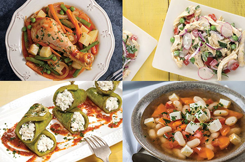

La salud comienza en el plato.
Elige alimentos que te den energía, no que te la quiten.
La comida sana es el mejor combustible para tu día.
Recetas saludables.
Las recetas saludables para veganos, vegetarianos, celíacos y deportistas están diseñadas para satisfacer las necesidades nutricionales específicas de cada grupo, sin comprometer el sabor ni la variedad. Los veganos, por ejemplo, buscan platos completamente libres de productos de origen animal, lo que implica el uso de alternativas vegetales ricas en proteínas, como legumbres, tofu, tempeh y quinoa. También pueden disfrutar de deliciosos postres sin lácteos ni huevos, utilizando sustitutos como la leche de almendras, el aguacate o el plátano para lograr cremosidad y dulzura natural.
Por otro lado, los vegetarianos tienen la flexibilidad de incluir productos como huevos, lácteos y miel en su dieta, lo que les permite incorporar una mayor variedad de fuentes de proteína animal sin dejar de seguir una alimentación basada principalmente en plantas. Esto les ofrece más opciones en cuanto a recetas ricas en calcio, hierro y otros nutrientes esenciales. Pueden disfrutar de platos como las lasañas de vegetales con queso, hamburguesas vegetales con huevo o batidos de frutas con yogur griego.
En el caso de los celíacos, es fundamental evitar el gluten, una proteína que se encuentra en el trigo, la cebada y el centeno. Las recetas sin gluten para celíacos aprovechan harinas alternativas como la de arroz, maíz, avena sin gluten o almendra, permitiendo crear panes, pasteles, galletas y platos principales sin comprometer el sabor ni la textura. Además, es importante elegir ingredientes frescos y naturales, como verduras, frutas, legumbres y carnes magras, para garantizar una dieta equilibrada y libre de gluten.
Finalmente, las recetas para deportistas se centran en proporcionar la energía necesaria para el rendimiento físico y la recuperación muscular. Estas recetas suelen estar equilibradas en carbohidratos complejos, proteínas de alta calidad y grasas saludables, y pueden incluir alimentos como batidos de proteínas, ensaladas con quinoa, platos con aguacate y salmón, y snacks energéticos a base de nueces y frutas secas.
Los deportistas también necesitan alimentos ricos en antioxidantes y micronutrientes que ayuden a reducir la inflamación y acelerar la recuperación después del ejercicio.
En resumen, las recetas saludables para veganos, vegetarianos, celíacos y deportistas no solo están diseñadas para cumplir con las restricciones dietéticas de cada grupo, sino también para ofrecer opciones deliciosas, nutritivas y satisfactorias, adaptadas a sus necesidades específicas y fomentando una vida sana y equilibrada.
Recetas para veganos
Recetas veganas nutritivas, sabrosas, creativas y respetuosas ambientales.
Recetas para vegetarianos
Recetas vegetarianas saludables, deliciosas, variadas y fáciles de hacer.
Recetas para celíacos
Recetas para celíacos sin gluten, saludables y deliciosas.

Recetas para deportistas
Recetas para deportistas energéticas, equilibradas, nutritivas y recuperadoras.